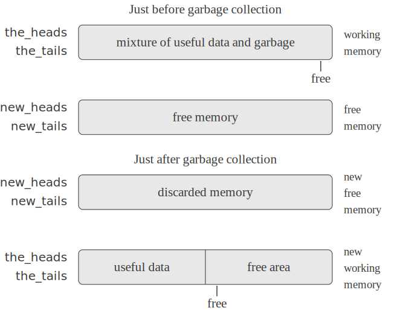

The representation method outlined in section 5.3.1 solves the problem of implementing list structure, provided that we have an infinite amount of memory. With a real computer we will eventually run out of free space in which to construct new pairs.[1] However, most of the pairs generated in a typical computation are used only to hold intermediate results. After these results are accessed, the pairs are no longer needed—they are garbage. For instance, the computation
accumulate((x, y) => x + y, 0, filter(is_odd, enumerate_interval(0, n)))
In order to recycle pairs, we must have a way to determine which allocated pairs are not needed (in the sense that their contents can no longer influence the future of the computation). The method we shall examine for accomplishing this is known as garbage collection. Garbage collection is based on the observation that, at any moment in a JavaScript interpretation, the only objects that can affect the future of the computation are those that can be reached by some succession of head and tail operations starting from the pointers that are currently in the machine registers.[2] Any memory cell that is not so accessible may be recycled.
There are many ways to perform garbage collection. The method we
shall examine here is called
stop-and-copy. The basic idea is to divide memory into two
halves: working memory
and free memory.
When
pair
constructs pairs, it allocates these in working memory. When working memory
is full, we perform garbage collection by locating all the useful pairs in
working memory and copying these into consecutive locations in free memory.
(The useful pairs are located by tracing all the
head
and
tail
pointers, starting with the machine registers.) Since we do not copy the
garbage, there will presumably be additional free memory that we can
use to allocate new pairs. In addition, nothing in the working memory
is needed, since all the useful pairs in it have been copied. Thus,
if we interchange the roles of working memory and free memory, we can
continue processing; new pairs will be allocated in the new working
memory (which was the old free memory). When this is full, we can
copy the useful pairs into the new free memory (which was the old
working memory).[3]
We now use our register-machine language to describe the stop-and-copy algorithm in more detail. We will assume that there is a register called root that contains a pointer to a structure that eventually points at all accessible data. This can be arranged by storing the contents of all the machine registers in a preallocated list pointed at by root just before starting garbage collection.[4] We also assume that, in addition to the current working memory, there is free memory available into which we can copy the useful data. The current working memory consists of vectors whose base addresses are in registers called the_heads and the_tails, and the free memory is in registers called new_heads and new_tails.
Garbage collection is triggered when we exhaust the free cells in the
current working memory, that is, when a
pair
operation attempts to increment the free
pointer beyond the end of the memory vector. When the garbage-collection
process is complete, the root pointer will
point into the new memory, all objects accessible from the
root will have been moved to the new memory,
and the free pointer will indicate the next
place in the new memory where a new pair can be allocated. In addition,
the roles of working memory and new memory will have been
interchanged—new pairs will be constructed in the new memory,
beginning at the place indicated by free, and
the (previous) working memory will be available as the new memory for the
next garbage collection.
Figure 5.15
shows the arrangement of memory just before and just after garbage
collection.

The state of the garbage-collection process is controlled by maintaining two pointers: free and scan. These are initialized to point to the beginning of the new memory. The algorithm begins by relocating the pair pointed at by root to the beginning of the new memory. The pair is copied, the root pointer is adjusted to point to the new location, and the free pointer is incremented. In addition, the old location of the pair is marked to show that its contents have been moved. This marking is done as follows: In the head position, we place a special tag that signals that this is an already-moved object. (Such an object is traditionally called a broken heart.)[5] In the tail position we place a forwarding address that points at the location to which the object has been moved.
After relocating the root, the garbage collector enters its basic cycle. At each step in the algorithm, the scan pointer (initially pointing at the relocated root) points at a pair that has been moved to the new memory but whose head and tail pointers still refer to objects in the old memory. These objects are each relocated, and the scan pointer is incremented. To relocate an object (for example, the object indicated by the head pointer of the pair we are scanning) we check to see if the object has already been moved (as indicated by the presence of a broken-heart tag in the head position of the object). If the object has not already been moved, we copy it to the place indicated by free, update free, set up a broken heart at the object's old location, and update the pointer to the object (in this example, the head pointer of the pair we are scanning) to point to the new location. If the object has already been moved, its forwarding address (found in the tail position of the broken heart) is substituted for the pointer in the pair being scanned. Eventually, all accessible objects will have been moved and scanned, at which point the scan pointer will overtake the free pointer and the process will terminate.
We can specify the stop-and-copy algorithm as a sequence of instructions for a register machine. The basic step of relocating an object is accomplished by a subroutine called relocate_old_result_in_new. This subroutine gets its argument, a pointer to the object to be relocated, from a register named old. It relocates the designated object (incrementing free in the process), puts a pointer to the relocated object into a register called new, and returns by branching to the entry point stored in the register relocate_continue. To begin garbage collection, we invoke this subroutine to relocate the root pointer, after initializing free and scan. When the relocation of root has been accomplished, we install the new pointer as the new root and enter the main loop of the garbage collector.
"begin_garbage_collection",
assign("free", constant(0)),
assign("scan", constant(0)),
assign("old", reg("root")),
assign("relocate_continue", label("reassign_root")),
go_to(label("relocate_old_result_in_new")),
"reassign_root",
assign("root", reg("new")),
go_to(label("gc_loop")),In the main loop of the garbage collector we must determine whether there are any more objects to be scanned. We do this by testing whether the scan pointer is coincident with the free pointer. If the pointers are equal, then all accessible objects have been relocated, and we branch to gc_flip, which cleans things up so that we can continue the interrupted computation. If there are still pairs to be scanned, we call the relocate subroutine to relocate the head of the next pair (by placing the head pointer in old). The relocate_continue register is set up so that the subroutine will return to update the head pointer.
"gc_loop",
test(list(op("==="), reg("scan"), reg("free"))),
branch(label("gc_flip")),
assign("old", list(op("vector_ref"), reg("new_heads"), reg("scan"))),
assign("relocate_continue", label("update_head")),
go_to(label("relocate_old_result_in_new")),At update_head, we modify the head pointer of the pair being scanned, then proceed to relocate the tail of the pair. We return to update_tail when that relocation has been accomplished. After relocating and updating the tail, we are finished scanning that pair, so we continue with the main loop.
"update_head",
perform(list(op("vector_set"),
reg("new_heads"), reg("scan"), reg("new"))),
assign("old", list(op("vector_ref"),
reg("new_tails"), reg("scan"))),
assign("relocate_continue", label("update_tail")),
go_to(label("relocate_old_result_in_new")),
"update_tail",
perform(list(op("vector_set"),
reg("new_tails"), reg("scan"), reg("new"))),
assign("scan", list(op("+"), reg("scan"), constant(1))),
go_to(label("gc_loop")),
The subroutine
relocate_old_result_in_new
relocates objects as follows: If the object to be relocated (pointed at by
old) is not a pair, then we return the same
pointer to the object unchanged (in new).
(For example, we may be scanning a pair whose
head
is the number 4. If we represent the
head
by n4, as described in
section 5.3.1, then we want the
relocated
head
pointer to still be n4.) Otherwise, we
must perform the relocation. If the
head
position of the pair to be relocated contains a broken-heart tag, then the
pair has in fact already been moved, so we retrieve the forwarding address
(from the
tail
position of the broken heart) and return this in
new. If the pointer in
old points at a yet-unmoved pair, then we move
the pair to the first free cell in new memory (pointed at by
free) and set up the broken heart by storing a
broken-heart tag and forwarding address at the old location.
The subroutine
relocate_old_result_in_new
uses a register
oldht
to hold the
head
or the
tail
of the object pointed at by old.[6]
"relocate_old_result_in_new",
test(list(op("is_pointer_to_pair"), reg("old"))),
branch(label("pair")),
assign("new", reg("old")),
go_to(reg("relocate_continue")),
"pair",
assign("oldht", list(op("vector_ref"),
reg("the_heads"), reg("old"))),
test(list(op("is_broken_heart"), reg("oldht"))),
branch(label("already_moved")),
assign("new", reg("free")), // new location for pair
// Update "free" pointer.
assign("free", list((op("+"), reg("free"), constant(1))),
// Copy the head and tail to new memory
perform(list(op("vector_set"), reg("new_heads"), reg("new"), reg("oldht"))),
assign("oldht", list(op("vector_ref"),
reg("the_tails"), reg("old"))),
perform(list(op("vector_set"), reg("new_tails"), reg("new"), reg("oldht"))),
// Construct the broken heart
perform(list(op("vector_set"),
reg("the_heads"), reg("old"),
constant("broken_heart"))),
perform(list(op("vector_set"), reg("the_tails"), reg("old"), reg("new"))),
go_to(reg("relocate_continue")),
"already_moved",
assign("new", list(op("vector_ref"),
reg("the_tails"), reg("old"))),
go_to(reg("relocate_continue")),At the very end of the garbage collection process, we interchange the role of old and new memories by interchanging pointers: interchanging the_heads with new_heads, and the_tails with new_tails. We will then be ready to perform another garbage collection the next time memory runs out.
"gc_flip",
assign("temp", reg("the_tails")),
assign("the_tails", reg("new_tails")),
assign("new_tails", reg("temp")),
assign("temp", reg("the_heads")),
assign("the_heads", reg("new_heads")),
assign("new_heads", reg("temp"))
real-timeversion of the method, which does not require the computation to stop during garbage collection. Baker's idea was extended by Hewitt, Lieberman, and Moon (see Lieberman and Hewitt 1983) to take advantage of the fact that some structure is more volatile and other structure is more permanent. An alternative commonly used garbage-collection technique is the mark-sweep method. This consists of tracing all the structure accessible from the machine registers and marking each pair we reach. We then scan all of memory, and any location that is unmarked is
swept upas garbage and made available for reuse. A full discussion of the mark-sweep method can be found in
pairthat doesn't satisfy the is_pair predicate. For simulation purposes, is_pointer_to_pair can be implemented as is_pair.